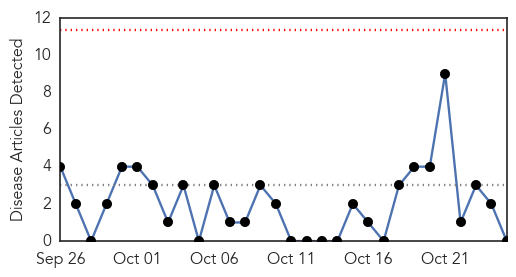

Dengue Fever
30-Day Web Trend
1 alerts, 0 warnings

30-Day Twitter Trend
2 alerts, 0 warnings

Article Locations

Article Confidences

Top Articles:
- 0.988
- CHP investigates local confirmed case of dengue fever
- 0.980
- Over 30 dengue cases reported in Bihar
- 0.961
- Chennai Corporation working against Aedes aegypti: Mayor
- 0.915
- Adviser for improved dengue surveillance
- 0.873
- Free dengue confirming test at KGMU & SGPGI
- 0.870
- Dengue spreads wings in Lucknow
- 0.853
- Dengue cases rise with rains
- 0.821
- Depts directed to control dengue
- 0.669
- 7 News Belize
- 0.667
- El Salvador: Chikungunya and dengue fever outbreak Emergency Plan of Action (EPoA) Update Operation n° MDRSV007 - El Salvador
- 0.610
- Unsanitary Trinis could bring CHIKV cases to a million — health minister
Top Tweets:
-
No tweets found for Oct 25, 2014
Measles
30-Day Web Trend
0 alerts, 0 warnings

30-Day Twitter Trend
0 alerts, 0 warnings

Article Locations

Article Confidences

Top Articles:
-
No articles found for Oct 25, 2014
Top Tweets:
-
No tweets found for Oct 25, 2014